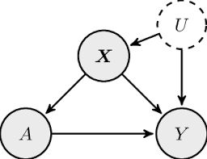

Mathematicians have a habit of taking an intuitive concept, formalizing it into a rigorous framework, and then slapping the formalization with the same name as the intuition that inspired it. This is often a net win, since the mathematicians can write papers without spell-checkers dinging them every time they use a technical word, and normal people feeling like they can get an idea of what mathematicians are talking about because the words are familiar. Sometimes, several mathematicians will do this with subtly different intuitive concepts, which leads to radically different mathematical definitions with the same name. For example, ‘normal’ can mean perpendicular, refer to a Gaussian distribution, describe a particular type of subgroup, or characterize a matrix. Today I’m going to explore different mathematical frameworks for causality.
We all have a fuzzy idea of what causality means.
Causality (OED): A person or thing that gives rise to an action, phenomenon, or condition.
If we look up ‘give rise to’ we get ‘causes to happen’, so I’d say this definition is about as helpful as a category theorist defining a group as a groupoid with a single object. Instead, let’s think about the conditions under which we as english speakers (or, keeping an open mind on successes in automatic translation of obscure blog posts, non-english-speakers) would say “X caused Y”.
Temporality. Well, we’d generally agree that X had to come before Y. If it starts raining and then I open my umbrella, I can be pretty sure that opening my umbrella didn’t cause it to start raining.
Necessity/Sufficiency. We’d also agree that if X (possibly in conjunction with other conditions) had not happened, then Y would not have happened. Suppose I leave a ceramic mug precariously placed on a coffee table within reach of a puppy, and the puppy jumps on the table, knocking the mug off and breaking it. If I’m feeling irritable, I yell at my dog for breaking the mug. But if I’m feeling introspective, I’ll mutter at myself for leaving the mug in reach of the puppy. I’m justified in blaming either action, or both, for the result. We might also say that X caused Y if X was sufficient for Y to happen. For example, if Tania is super smart and works super hard, but only one of these is necessary to get an A, then we could say “Tania got an A because she’s super smart” or “Tania got an A because she works super hard”.
Probabilistic relations. A third tricky aspect of causality is that it’s only sometimes deterministic. We often say that X causes Y if X makes Y more likely, not if it guarantees it. Smoking causes cancer. But if you take any particular person and make them smoke for 10 years, they may or may not develop lung cancer.
Mechanisms. This is a less critical point than the other three, but we typically expect there to be some sort of mechanism or chain of events that connect X directly to Y. If I smoke, tar collects in my lungs. Tar causes inflammation, inflammation leads to cellular damage, and cellular damage can result in cancer. In contrast, we generally say that spurious correlations occur when two events co-occur without there being a mechanism connecting them.
The attempts at mathematization of causality try to capture these notions in various ways. Many of these approaches are complementary – one can write down a graphical model that captures dependence relations, and also explicitly model what those relations are using an equation model – but they each make certain types of reasoning easy and others more difficult.
Causal graphical models are the easiest notion of causality to visualize. They take the conventions of a Bayes net (a graph where the nodes are random variables and the edges indicate dependencies) and endow them with additional semantics. If we see an arrow from X to Y in a causal graphical model, this means that we think that X is a cause of Y.

These models are cool because they combine intuitive notions of causality with graphical structures that are easy to write algorithms for. Causal dependences can be tested as properties of a graph, and computer science has a massive repertoire of algorithms to check properties of graphs, so causal graphical models are generally easy to do computations with.
Structural equation models describe causal structures by giving equations that define the relationships between variables. In a causal interpretation of these models, we could say that the left hand side of the equation is causally dependent on the right hand side. For example, if I’m describing a linear relationship between variables \(X\) and \(Y\), then the equation
\[ X = 2Y + \epsilon_X \] where \(\epsilon_X\) is some noise term, has a different semantic interpretation than the equation
\[Y = \frac{1}{2} X + \epsilon_Y\]
even though in principle they can both describe the same probability distribution. Using structural equation models makes sense when you’re an economist who already knows what the causal structure of the problem is and what the variables are, and just want to understand how changing one variable affects another by plugging in your equations.
“Theoretical infatuation”
“nonscientific ad hockery”
“bad practical advice” -Rubin, 2009
Some statisticians take moral offense to the causal modeling approaches described above. SEMs assume that the modeler knows the causal relationships between variables in advance, and there’s some debate over whether the parameters learned by SEMs can really be interpreted as ‘causal’ given that they depend on the modeler’s assumptions about the system. They propose instead the Potential Outcomes framework. Instead of interpreting causality as arrows \(X \rightarrow Y\), PO treats causal effects as changes to a set of counterfactual distribution on \(Y\), \(Y_x\), indexed by possible values of \(X=x\). If \(Y\) is independent of \(X\), then the law of \(Y_x\) is the law of \(Y\). Judea Pearl claims that PO and SEMs are logically equivalent – any statement made in the language of potential outcomes can be reformulated into a structural equation model and vice versa – but I haven’t read the paper that verifies this.
An approach to capturing notions of causality from data is to take the assumption that causal mechanisms are invariant, and leverage it in the regression setting to determine causal variables. This idea is explained in great detail in a tutorial by Peter Buhlmann and also in a recent paper by Martin Arjovsky.
The invariance-as-causality camp tackles the problem of finding causal relationships between inputs \(X\) and a particular quantity of interest \(Y\). We assume that \(Y\) is some function of \(X\), and we further assume that we’ve been able to collect data in many different settings, called environments \(\mathcal{E}\), so that we can partition \(X\) into \(\cup_{e \in \mathcal{E}} X^e\). It is implicitly assumed that some manipulation has occurred in each of these environments, so that \(P(Y|X^e) \neq P(Y|X^{e'})\). However, the claim is that any function \(f\) of \(X\) satisfying \(P(Y|f(X^e)) = P(Y|f(X^{e'}))\) is capturing some causal property of the relationship between \(X\) and \(Y\).
This approach has some drawbacks in its reliance on having an informative set of environments and also not being able to provide any guarantees that the invariant predictors across \(\mathcal{E}\) are actually causal predictors unless the environments satisfy certain assumptions. However it’s an interesting take on causality that lends itself well to the machine learning setting.
As we’ve seen, causality is a messy concept and there are many ways to go about mathematizing it. If you want to learn more there are two fairly decisive textbooks on the topic: Causality by Judea Pearl, and Elements of Causal Inference by Jonas Peters, Dominik Janzing, and Bernhard Schölkopf. I found Elements of Causal Inference to be a more engaging pedagogical introduction because it has more exercises to try out, but I recommend giving both a look because they take very different perspectives on causality. I might write some more blog posts going into more technical detail on causal inference later, but given my blogging frequency the curious reader should probably give the other resources a read first.